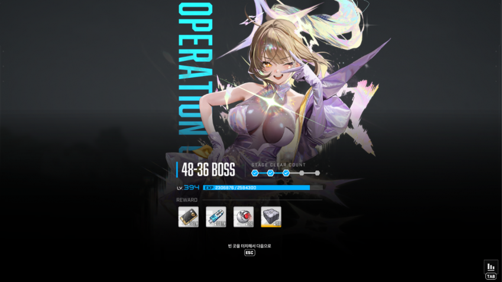
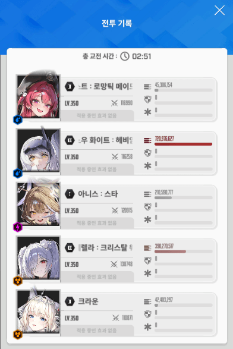
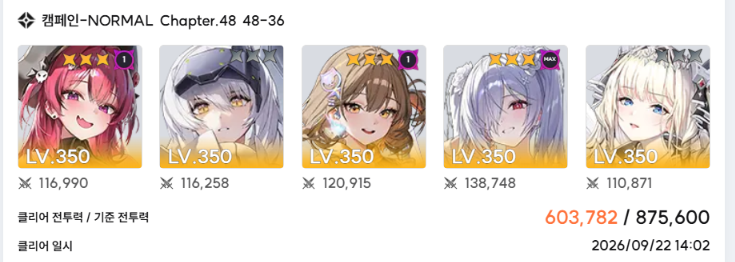
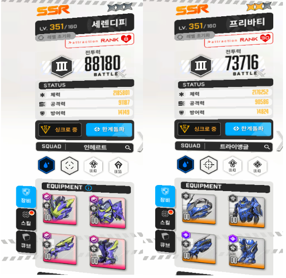

클리어 투력
딜러진 스펙
3.5 뉴비들 중에 나와 같이 좀 빨리 달린 사람들은 48지 버디에 주차중이거나 이미 깼을거임
리버렐리오 바디의 특징은 2페 삼원저지의 단단함이 있겠다.
이거 빼고는 걍 샌드백 글러트니st 체급 돼지인데 이 저지가 너무 튼튼해서 빡셈.

지금 무기한 최저는 프바 or 수로시 밖에 없다.
근데 난 수로시를 이제서야 손 대기 시작했고
프바는 10104 맞춰놓고 협전 버스용으로 쓰고 있기 때문에 얘네 둘 갖고 뭘 할 수가 없음.
수로시를 안 쓴다면 각설 버스트 2방으로 저지 원 2개를 깨고
나머지 원 하나를 집중포화로 깨는 방법이 있는데
본인 체급이 어느정도 되면 굳이 안 그래도 된다. 내가 그냥 수렐루 빨로 그렇게 깼다.
본인이 최저 컷에 크게 욕심없다면
일단 낭낭하게 361찍고 각설or수로시 + 제일 잘 키운 비우코 3버 딜러로 도전해도 충분히 깰만하다.
아마 수렐루가 3.5 뉴비들의 첫 한정 1% 픽업이었어서
다들 풀돌내지 n코강 욕심 냈을거니 일단 수렐루를 넣고 깨보라는 의미에서 참고하라고 글 써봄
참고용 영상
얘는 택틱이랄게 크게 없어서 버스트 순서만 잘 기억하면 된다.
버스트 순서는 다음과 같다.
메크메 크메크 크크메 크크메 크메
늘 그렇듯이 우코 딜러인 각설한테 메스트를 몰아주는데, 11, 12번째 버스트는 반드시 크메를 해주자.
택틱 설명
0. 조준보정 풀로 땡겨 놓는다
1. 시작하면 아니스 차지 땡기면서 각설로 바꾸고 버스트 바로 킨다. 메스트 각설
리버 바디가 시작하자마자 공높 니케한테 레이저를 쏘는데
아니스+각설이면 굳이 엄폐 안 해도 크라운 버스트 써서 레이저를 씹을 수 있다.
근데 렐루를 쓰면 동성장 기준 전투 시작 자공증 때문에 100% 렐루가 레이저 타겟을 먹음.
디코이로 흘리는게 가능하니까 크라운 버스트 누를 필요 없이 메크메 해서 최대한 세게 때리면 된다.
바꿔 말하면 본인이 정석 조합일 경우(각설or수로시or프바)일때는 여기서 반드시 크라운 버스트를 켜야 함.
2. 그냥 그렇게 줘 패다가 버스트 차는대로 킨다 크라운 수렐루
위고비 때 처럼 누구 때리는지 알려주고 총알을 쫑쫑 날리는데 미리 엄폐하던 칼엄폐하던 아무런 상관 없음.
총알 날리고는 곧바로 전체기를 준비 하는데, 총알 타겟이 누구였냐에 따라 다음과 같이 대처하면 된다.
ㅁ...ㅁ...ㅁ
....ㅁ...ㅁ....
전열(1,3,5번) 니케가 맞은 경우
참고용 영상 같은 경우인데, 이때는 타겟 된 니케만 개별엄폐하면 된다.
나머지 니케들은 크라운 버스트가 전체기를 막아줌.
후열(2,4번) 니케가 맞은 경우
이 경우 후열 니케가 맞으면서 전열 크라운 버스트가 같이 갈려버림.
예전에 니힐리스타가 엄폐 까려고 쏘는 미사일 생각하면 쉽다.
2번에 크라운 둬서 미사일 도발하고 1,3번 니케 엄폐물로 미사일 일부를 흡수하는 그거랑 똑같음.
그렇기 때문에 이때는 타이밍에 맞춰서 스페이스바로 전체 엄폐를 해줘야 된다.
아무 생각없이 개별엄폐 하면 전열 니케가 의문사 당함.
크게 딜로스는 일어나지 않으니까
전열 - 개별엄폐
후열 - 전체엄폐
로 외우면 된다. 엄폐 타이밍에 맞물려 버스트 딱 차니까 되는대로 켜준다. 메스트 각설
3. 전체기를 끝내고 나면 버디가 저지원을 펼친다.
타이밍 상 풀차지 첫 방 쏠때 쯤임.
이 저지 타이밍이 개인, 택틱마다 천차만별인데
내가 가장 아다리 맞았던건 두번째 풀차지 땡기면서 한쪽 저지하고, 몸에다가 쏜 뒤 바로 반대편 저지를 하는거였음.
대충 정석 저지가 저지원이 7시쯤 됐을 타이밍에 저지를 하게 되는데
내가 제시하는 택틱은 5~6시 쯤 저지하게 됨. 난 이렇게 하는게 깔끔하더라.
저지 끝내면 갑자기 아래로 슝 내려가는데 딱 버스트 아다리 맞게 켜진다. 크라운 수렐루
4. 버디가 면상 가까이 와서 레이저 '2방' 을 쏜다.
여기서 '2방'을 강조하는 이유는 말 그대로 '2방'이기 때문에 크라운 버스트로 못 막는다.
경고도 뜨고 타겟 니케 앞에 오기 때문에 여유있게 엄폐하면 되는데
만약 타겟이 '수렐루'면 그냥 패턴 무시하고 풀딜하면 된다.
렐루는 이 패턴에 타겟 되더라도 디코이+크라운 버스트로 완막 가능.
참고로
수렐루가 계속 공높 니케 타겟을 먹기 때문에 패턴 다 끝나고 짜잘하게 쏘는 레이저는 무시해도 된다.
수렐루 디코이or크라운 버스트가 다 막아버림.
만약 각설 버스트 타이밍이라 각설이 타겟되더라도 상관 없다.
이 택틱 구조적으로 각설이 타겟일 때는 항상 크라운 버스트 타이밍임.
각설 몰빵을 위해 메스트에 각설 붙여준다. 메스트 각설
5. 걍 개패다가 밑에 경고 표시 보고 엄폐하면 됨. 크라운 수렐루
물론 이때도 수렐루가 타겟되면 엄폐 안해도 됨.
버디가 다시 한번 더 면상 가까이 와서 레이저 쏘니까 엄폐 해주기.
6. 레이저는 버스트 타이밍에 맞물리니까 무시하고 개패면 된다. 크라운 각설 / 크라운 수렐루
수렐루 버스트 키고나면 얼마 안가서 총알 한번 + 전체기 패턴을 준비함.
이때 마찬가지로
전열 니케 - 개별 엄폐
후열 니케 - 전체 엄폐
를 지키면 된다.
엄폐 타이밍은 버스트 게이지 다 채우고 딱 엄폐하고 버스트 키면 되는데 메스트 각설
여기서 어떤 엄폐를 하냐에 따라 상황이 좀 바뀌니까 상황 숙지가 좀 필요함.
6-1. 개별 엄폐
만약 전열이 타겟되어서 개별 엄폐를 진행한다면, 암전 저지 전에 첫번째 풀차지를 맞출 수 있다.
영상에서는 아슬하게 실패했지만 열심히 비비는 입장이라면 이 한방 맞추는게 중요할 수 있음.
그 후 각설 풀차지를 유지한 채로 3각형 저지하고, 가운데 살짝 튼튼한 저지원에 두번째 풀차지 쏴서 바로 깨면 된다.
딱 쏠때 쯤 풀버 꺼지기 때문에 순차 미사일이 버충해주면서 금방 버스트가 참.
풀차지 땡겨놓고 '스킵 누르면' 2페로 넘어가면서 자동으로 쏘고 바로 버스트를 켤 수 있음. 크라운 수렐루
풀차지 공증 때문에 이번엔 수렐루가 타겟이 아니라 각설인데, 크라운 버스트가 공높 레이저를 막아준다.
6-2. 개별 엄폐
만약 후열이 타겟되어서 전체 엄폐를 진행한다면 각설 풀차지 땡기는 중간에 암전 저지가 시작되버린다.
각설 풀차지를 유지한 채로 3각형 저지하고, 가운데 살짝 튼튼한 저지원에 첫번째 풀차지를 쏴서 바로 깨면 된다.
쏘고 나서 두번째 풀차지를 땡길 때 풀버가 꺼지게 됨.
풀차지 땡기면서 '스킵 누르지 말고' 2페로 넘어간다. 마찬가지로 풀차지 공증 때문에 레이저 타겟이 각설이다.
2페에 진입하면 풀버가 꺼진 두번째 풀차지를 쏘고 바로 개별 엄폐해서 2페 시작 레이저를 엄폐물로 막으면 된다. 크라운 수렐루
두 상황 다 공통적으로 2페 시작하면서 수렐루 버스트가 켜지기 때문에
수렐루의 코어 명중대미지가 박히니까 딜이 확 높아지기 시작함.
7. 코어에 커서 둔채로 샌드백 패듯 패는데 반드시 크라운 버스트를 키도록 한다. 크라운 각설
버디가 전체기에 가려져서 안 보이는데, 코어 판정 그대로 있으니까 코어 더듬더듬 잘 찾아서 코어 패면 됨.
전체기는 크라운 버스트가 막아준다.
그후 계속 패다보면 위에서 그랬듯 총알 3번을 쫑쫑쫑 쏘는데 경고 표시보고 엄폐하면 된다.
쏘는 와중에 버충이 되기 때문에 3스택 메스트를 켜준다. 메스트 수렐루
8. 풀버 시간 중간쯤 개 단단한 삼원저지가 시작된다.
영상에서는 ESC컨을 하지 않았는데 저지원 하나당 각설 차지 한방+톡톡이 우겨넣으면서 깨면 풀버 꺼지기 전에 저지가 가능함.
저지 성공하면 공중제비 돌고 그로기 상태에 빠지는데 줘 패주면 된다 크라운 각설
9. 그로기 해제 후 바로 쏘는 레이저는 신경쓸 필요 없다 메스트 수렐루
남은 10~12초 동안 최대한 줘 패준다. 모든 택틱 수행하고 못 죽이면 딜 부족이다 자라.
피통 얼마 안 남았으면 크리리트 필요
당연하겠지만
공높 레이저를 신경 쓴다면 수렐루 자리에 수로시, 프바 뭘 넣던 택틱은 똑같이 굴러감.
열심히 썼는데 개추좀
++++++
만약 8번에서 저지가 안되면 이 택틱을 안 쓰는게 나음.
그럼에도 이 택틱을 골자로 깨고 싶다면
2페 시작하고 나서 버스트를 키지 말고 그냥 각설 엄폐하고 노 버스트 상태로 치다가
전체기 준비하려고 회오리가 생기면 버스트를 킨다. 크라운 수렐루
그후 총알 엄폐 똑같이 하면 버충 되는데 각설 풀차지 땡기고 대기한 채 버스트 킨다. 메스트 각설
풀차지 꽉차면 기다리고 있다가 삼원저지 시작할 때 ESC 누르고 저지원에 한발 빵.
그 후 풀차지 땡기면서 두번째 원 집중포화로 저지. 마지막 저지원에 두발 빵. 버디 그로기 상태 돌입.
그 후에는 버스트 되는대로 켜주면 된다. 크라운 수렐루 / 크라운 각설
이렇게 진행할 경우 최종 버스트는
메크메 크메크 크크메 크메크 크
가 된다. 버스트 하나 날아감.
마지막 10초에 안에 각설 버스트 2방 집어넣고 이렇게 해서 깰 각이 나올지 어림잡아보면 됨.